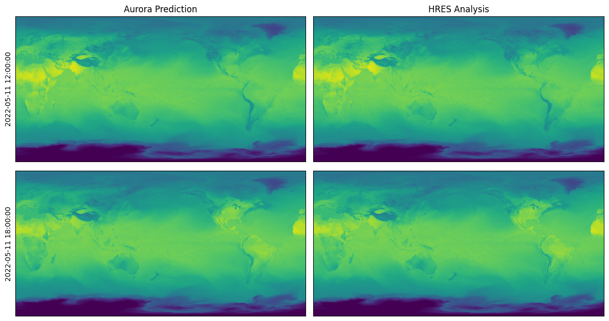

Predictions for HRES at 0.1 Degrees#
In this example, we will download IFS HRES analysis data at 0.1 degrees resolution for 11 May 2022 from the Research Data Archive and run Aurora on this data. We will use the version of Aurora that was fine-tuned on IFS HRES analysis at 0.1 degrees resolution.
Running this notebook requires additional Python packages. You can install these as follows:
pip install requests cfgrib matplotlib
Downloading the Data#
To start, we download the data from Research Data Archive.
from datetime import datetime
from pathlib import Path
import requests
import xarray as xr
# Data will be downloaded here.
download_path = Path("~/downloads/hres_0.1").expanduser()
# Day to download. This will download all times for that day.
date = datetime(2022, 5, 11)
# Each variable has a number associated with it. This is the number that will be used in
# the RDA request.
var_nums = {
"2t": "167", # 2m temperature
"10u": "165", # 10m u-component of wind
"10v": "166", # 10m v-component of wind
"msl": "151", # Mean sea level pressure
"t": "130", # Temperature
"u": "131", # u-component of wind (atmospheric)
"v": "132", # v-component of wind (atmospheric)
"q": "133", # Specific humidity (atmospheric)
"z": "129", # Geopotential
"slt": "043", # Soil type
"lsm": "172", # Land-sea mask
}
# Construct the URLs to download the data from.
downloads: dict[Path, str] = {}
for v in ["2t", "10u", "10v", "msl", "z", "slt", "lsm"]:
downloads[download_path / date.strftime(f"surf_{v}_%Y-%m-%d.grib")] = (
f"https://data.rda.ucar.edu/ds113.1/"
f"ec.oper.an.sfc/{date.year}{date.month:02d}/ec.oper.an.sfc.128_{var_nums[v]}_{v}."
f"regn1280sc.{date.year}{date.month:02d}{date.day:02d}.grb"
)
for v in ["z", "t", "u", "v", "q"]:
for hour in [0, 6, 12, 18]:
prefix = "uv" if v in {"u", "v"} else "sc"
downloads[download_path / date.strftime(f"atmos_{v}_%Y-%m-%d_{hour:02d}.grib")] = (
f"https://data.rda.ucar.edu/ds113.1/"
f"ec.oper.an.pl/{date.year}{date.month:02d}/ec.oper.an.pl.128_{var_nums[v]}_{v}."
f"regn1280{prefix}.{date.year}{date.month:02d}{date.day:02d}{hour:02d}.grb"
)
# Perform the downloads.
for target, source in downloads.items():
if not target.exists():
print(f"Downloading {source}")
target.parent.mkdir(parents=True, exist_ok=True)
response = requests.get(source)
response.raise_for_status()
with open(target, "wb") as f:
f.write(response.content)
print("Downloads finished!")
Downloads finished!
Preparing a Batch#
We convert the downloaded data to an aurora.Batch, which is what the model requires.
import numpy as np
import torch
from aurora import Batch, Metadata
# Load these pressure levels.
levels = (1000, 925, 850, 700, 600, 500, 400, 300, 250, 200, 150, 100, 50)
def load_surf(v: str, v_in_file: str) -> torch.Tensor:
"""Load the downloaded surface-level or static variable `v` for hours 00 and 06."""
ds = xr.open_dataset(download_path / date.strftime(f"surf_{v}_%Y-%m-%d.grib"), engine="cfgrib")
data = ds[v_in_file].values[:2] # Use hours 00 and 06.
data = data[None] # Insert a batch dimension.
return torch.from_numpy(data)
def load_atmos(v: str) -> torch.Tensor:
"""Load the downloaded atmospheric variable `v` for hours 00 and 06."""
ds_00 = xr.open_dataset(
download_path / date.strftime(f"atmos_{v}_%Y-%m-%d_00.grib"), engine="cfgrib"
)
ds_06 = xr.open_dataset(
download_path / date.strftime(f"atmos_{v}_%Y-%m-%d_06.grib"), engine="cfgrib"
)
# Select the right pressure levels.
ds_00 = ds_00[v].sel(isobaricInhPa=list(levels))
ds_06 = ds_06[v].sel(isobaricInhPa=list(levels))
data = np.stack((ds_00.values, ds_06.values), axis=0)
data = data[None] # Insert a batch dimension.
return torch.from_numpy(data)
# Extract the latitude and longitude from an arbitrary downloaded file.
ds = xr.open_dataset(next(iter(downloads.keys())), engine="cfgrib")
batch = Batch(
surf_vars={
"2t": load_surf("2t", "t2m"),
"10u": load_surf("10u", "u10"),
"10v": load_surf("10v", "v10"),
"msl": load_surf("msl", "msl"),
},
static_vars={
# The static variables are constant, so we just get them for the first time.
"z": load_surf("z", "z")[0, 0],
"slt": load_surf("slt", "slt")[0, 0],
"lsm": load_surf("lsm", "lsm")[0, 0],
},
atmos_vars={
"t": load_atmos("t"),
"u": load_atmos("u"),
"v": load_atmos("v"),
"q": load_atmos("q"),
"z": load_atmos("z"),
},
metadata=Metadata(
lat=torch.from_numpy(ds.latitude.values),
lon=torch.from_numpy(ds.longitude.values),
time=(date.replace(hour=6),),
atmos_levels=levels,
),
)
# Regrid the batch to 0.1 degrees resolution. Note that this is a convenience function
# which is not optimised for speed or accuracy. Use at your own risk!
batch = batch.regrid(res=0.1)
Loading and Running the Model#
Finally, we are ready to load and run the model and visualise the predictions. We perform a roll-out for two steps, which produces predictions for hours 12:00 and 18:00.
from aurora import AuroraHighRes, rollout
model = AuroraHighRes(
# Use manually downloaded and regridded static variables.
surf_stats={"z": (-3.270407e03, 6.540335e04)},
)
model.load_checkpoint("microsoft/aurora", "aurora-0.1-finetuned.ckpt")
model.eval()
model = model.to("cuda")
with torch.inference_mode():
preds = [pred.to("cpu") for pred in rollout(model, batch, steps=2)]
model = model.to("cpu")
import matplotlib.pyplot as plt
truth = xr.open_dataset(download_path / date.strftime("surf_2t_%Y-%m-%d.grib"), engine="cfgrib")
fig, ax = plt.subplots(2, 2, figsize=(12, 6.5))
for i in range(ax.shape[0]):
pred = preds[i]
ax[i, 0].imshow(pred.surf_vars["2t"][0, 0].numpy() - 273.15, vmin=-50, vmax=50)
ax[i, 0].set_ylabel(str(pred.metadata.time[0]))
if i == 0:
ax[i, 0].set_title("Aurora Prediction")
ax[i, 0].set_xticks([])
ax[i, 0].set_yticks([])
ref = truth["t2m"][2 + i].values
ax[i, 1].imshow(ref - 273.15, vmin=-50, vmax=50)
if i == 0:
ax[i, 1].set_title("HRES Analysis")
ax[i, 1].set_xticks([])
ax[i, 1].set_yticks([])
plt.tight_layout()
